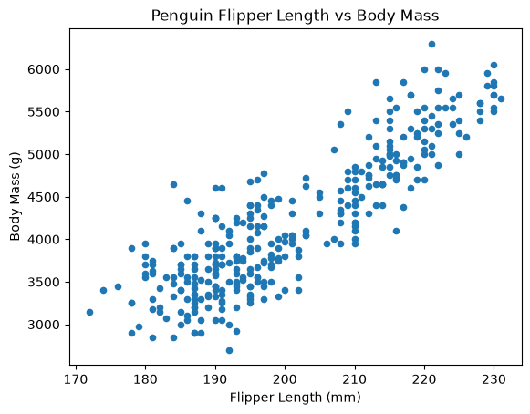
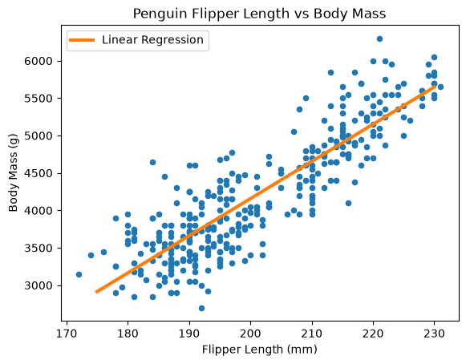
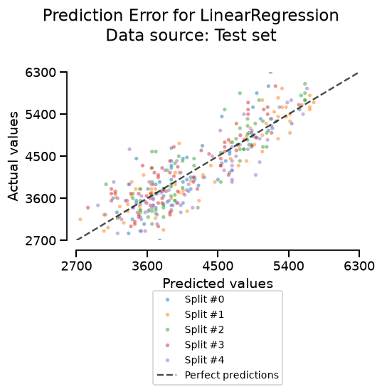

Evaluate a predictive model#
In this first notebook, we show how to evaluate a predictive model.
Let’s consider a simple regression problem by loading a subset of the penguins dataset. Let’s check what data are available in this dataset.
Environment setup#
Run this cell in JupyterLite. A local installation already provides these packages.
%pip install -q "scikit-learn~=1.9.1" "skrub~=0.11.0" "skore~=0.29.0" pandas matplotlib
/home/runner/work/sgap-2026/sgap-2026/.pixi/envs/default/bin/python: No module named pip
Note: you may need to restart the kernel to use updated packages.
import pandas as pd
df = pd.read_csv("../datasets/penguins_regression.csv")
df
| Flipper Length (mm) | Body Mass (g) | |
|---|---|---|
| 0 | 181.0 | 3750.0 |
| 1 | 186.0 | 3800.0 |
| 2 | 195.0 | 3250.0 |
| 3 | 193.0 | 3450.0 |
| 4 | 190.0 | 3650.0 |
| ... | ... | ... |
| 337 | 207.0 | 4000.0 |
| 338 | 202.0 | 3400.0 |
| 339 | 193.0 | 3775.0 |
| 340 | 210.0 | 4100.0 |
| 341 | 198.0 | 3775.0 |
342 rows × 2 columns
Introduction to the core concepts#
In this dataset, we observe that we have two variables: the flipper length and the body mass of the penguins. The objective here is to create a predictive model allowing us to predict the body mass of a penguin based on its flipper length.
First, we can have a look at the relationship between the flipper length and the body mass of the penguins.
ax = df.plot.scatter(x="Flipper Length (mm)", y="Body Mass (g)")
_ = ax.set_title("Penguin Flipper Length vs Body Mass")

Looking at this plot, we observe that there is a kind of linear relationship between the flipper length and the body mass of the penguins. We will start by fitting a linear regression model to this data.
To do so, we will first prepare the data by creating the input data X and the target
data y.
X = df[["Flipper Length (mm)"]]
y = df["Body Mass (g)"]
print(f"The dimensions of X are: {X.shape}")
print(f"The dimensions of y are: {y.shape}")
The dimensions of X are: (342, 1)
The dimensions of y are: (342,)
Here, the matrix X only contains a single feature. However, in the future, we might
want to add several features that allow us to predict the target y. The target y
is a one-dimensional array here, meaning that we only predict a single target. Note
that in some cases, it is possible that the target to be predicted is a
multi-dimensional array.
Also, here we try to predict a continuous target. This is why we are in a regression setting. In other cases, we might want to predict a categorical target. This is called a classification problem.
Let’s start by fitting a scikit-learn model that is a simple linear regression model. With a single feature, the predicted body mass is a straight line:
from sklearn.linear_model import LinearRegression
linear_regression = LinearRegression()
linear_regression.fit(X, y)
LinearRegression()In a Jupyter environment, please rerun this cell to show the HTML representation or trust the notebook.
On GitHub, the HTML representation is unable to render, please try loading this page with nbviewer.org.
Parameters
Fitted attributes
In scikit-learn, the method fit is used to train a model. In this case, it allows
us to find the best parameters of the linear regression model to fit the data. These
parameters are stored in the attributes coef_ and intercept_ of the instance.
linear_regression.coef_, linear_regression.intercept_
(array([49.68556641]), np.float64(-5780.831358077066))
Let’s now use this model to predict the body mass of the penguins based on their flipper length. We create a synthetic dataset of potential flipper length values and predict the body mass of the penguins using our model.
import numpy as np
X_to_infer = pd.DataFrame({"Flipper Length (mm)": np.linspace(175, 230, 100)})
y_pred = linear_regression.predict(X_to_infer)
The method predict allows us to get the prediction of the model on new data. Now,
we plot the obtained values.
ax = df.plot.scatter(x="Flipper Length (mm)", y="Body Mass (g)")
ax.set_title("Penguin Flipper Length vs Body Mass")
ax.plot(X_to_infer, y_pred, linewidth=3, color="tab:orange", label="Linear Regression")
_ = ax.legend()

Fitting chooses the coefficient and the intercept that minimize a loss. For
LinearRegression, that loss is the residual sum of squares between the observed
body mass and the prediction:
\(x_i\) is the flipper length of penguin \(i\) and \(y_i\) is its body mass. The mean squared error is this sum divided by \(n\). The factor \(1/n\) does not depend on the parameters, so both losses are minimized by the same coefficient and intercept. The scikit-learn user guide presents this estimator as ordinary least squares. The prediction is an estimate of the conditional mean of the body mass.
Gradient descent#
The same loss can be minimized by gradient descent. The gradient is the pair of partial derivatives of the residual sum of squares with respect to the coefficient and the intercept:
The term in parentheses is the residual of penguin \(i\). Differentiating the squared residual brings a factor \(2\), and the minus sign comes from the residual decreasing when the prediction increases. The coefficient derivative has an extra \(x_i\) because the prediction depends on the coefficient through \(\text{coef} \times x_i\).
Each partial derivative is the rate at which the loss increases when that parameter increases. An optimizer starts from some parameters and repeatedly steps in the opposite direction, with \(\eta\) the learning rate:
With a small enough learning rate, each step reduces the loss. This loss is a convex
quadratic, so the updates then reach the ordinary least-squares solution.
LinearRegression computes that solution directly.
We can compute the mean squared error on the same dataset that we used to train the model.
from sklearn.metrics import mean_squared_error
error = mean_squared_error(y, linear_regression.predict(X))
print(f"The mean squared error is: {error:.2f}")
The mean squared error is: 154546.19
Exercise#
LinearRegression estimates the conditional mean. Another linear model,
QuantileRegressor, estimates a conditional quantile. The documentation is in the
user guide on
quantile regression
and in the
QuantileRegressor
docstring.
The model minimizes the pinball loss. With quantile=0.5, the target is the
conditional median, and the loss matches the median absolute error. Set alpha=0:
the default value adds an L1 penalty and would confound the comparison with
LinearRegression.
Fit this median model on the same data.
Plot its predictions on the same figure as the linear regression.
Compute the mean squared error and the median absolute error of both models.
Which model wins on which metric?
The model we choose depends on the quantity we want to estimate, and that quantity should match the objective of the problem.
#
# Write your code here.
Evaluate on unseen data#
The previous section introduced the core concepts: the linear prediction, the loss it minimizes, and the quantity that loss estimates. The errors computed so far use the same penguins that were used to fit the models. In production, the model is applied to penguins it has never seen. The quantity we want is the error on such a completely unseen dataset.
We set aside a testing set with train_test_split. The training set is used to
create the model. The testing set is left out of fit, so the error computed on it
stands in for the error we would observe in that future production setting.
from sklearn.linear_model import QuantileRegressor
from sklearn.metrics import median_absolute_error
from sklearn.model_selection import train_test_split
X_train, X_test, y_train, y_test = train_test_split(X, y, random_state=0)
We fit the linear model and the median model on the training set only. The median
model is a QuantileRegressor with quantile=0.5 and alpha=0, as in the exercise.
We compare them with the median absolute error on the testing set, our stand-in for
future data.
linear_regression.fit(X_train, y_train)
quantile_regression = QuantileRegressor(quantile=0.5, alpha=0)
quantile_regression.fit(X_train, y_train)
print(
"Median absolute error of the linear model on the testing set: "
f"{median_absolute_error(y_test, linear_regression.predict(X_test)):.2f}"
)
print(
"Median absolute error of the quantile model on the testing set: "
f"{median_absolute_error(y_test, quantile_regression.predict(X_test)):.2f}"
)
Median absolute error of the linear model on the testing set: 247.26
Median absolute error of the quantile model on the testing set: 230.88
Each printed number is a single estimate of the generalization error, the error on data held out to mimic future production data. It has no variance. A lower value on this split is not evidence that the improvement is significant: we cannot tell whether the difference would show up again on another split.
Exercise#
Repeat the train-test evaluation of the linear model for several seeds, and plot the distribution of the test error.
Use a
forloop overrange.At each seed, call
train_test_splitwithrandom_state=seed, fit the linear model, and append the median absolute error on the test set to a list.Plot that list with
pandas.Series.plot.hist.
Cross-validation#
Cross-validation repeats the train-test split several times. Each repetition fits the model on one part of the data and evaluates it on the part left out, the same idea as the testing set above.
Doing this repetition by hand is tedious. cross_validate, with a KFold splitter,
repeats the split for us and stores the results in a Python dictionary.
We score each split with the mean absolute error. Scikit-learn scores are
higher-is-better, so this error is passed as neg_mean_absolute_error. The stored
values are negative: a value closer to zero is a smaller error. This is the mean
absolute error, not the median absolute error from the previous cells.
from sklearn.model_selection import KFold, cross_validate
cv = KFold(n_splits=5, shuffle=True, random_state=0)
cv_results = cross_validate(
linear_regression,
X,
y,
cv=cv,
scoring="neg_mean_absolute_error",
return_train_score=True,
)
cv_results = pd.DataFrame(cv_results)
cv_results
| fit_time | score_time | test_score | train_score | |
|---|---|---|---|---|
| 0 | 0.001391 | 0.000811 | -307.245775 | -314.509785 |
| 1 | 0.001148 | 0.000761 | -277.067762 | -322.469607 |
| 2 | 0.001100 | 0.000737 | -325.648290 | -310.176461 |
| 3 | 0.001077 | 0.000718 | -323.161149 | -309.589876 |
| 4 | 0.001069 | 0.000711 | -346.313448 | -307.874374 |
cv_results[["train_score", "test_score"]].describe()
| train_score | test_score | |
|---|---|---|
| count | 5.000000 | 5.000000 |
| mean | -312.924021 | -315.887285 |
| std | 5.869357 | 25.766106 |
| min | -322.469607 | -346.313448 |
| 25% | -314.509785 | -325.648290 |
| 50% | -310.176461 | -323.161149 |
| 75% | -309.589876 | -307.245775 |
| max | -307.874374 | -277.067762 |
A structured report with skore#
evaluate runs the same cross-validation and stores it in a structured report.
For a regressor, this report already includes the mean absolute error. It is
reported as a positive error under the name mae, with no neg_ prefix. We
summarize the metrics directly.
from skore import evaluate
report = evaluate(linear_regression, X, y, splitter=cv)
report.metrics.summarize().frame()
No such comm: f172986c8d4f4d58ab17c0f3c0656427
| linearregression_mean | linearregression_std | |
|---|---|---|
| metric | ||
| default_score | 0.745033 | 0.057656 |
| r2 | 0.745033 | 0.057656 |
| rmse | 395.140350 | 31.056563 |
| mae | 315.887285 | 25.766106 |
| mape | 0.078576 | 0.007587 |
| fit_time | 0.001136 | 0.000367 |
| predict_time | 0.000453 | 0.000027 |
report
No such comm: deab4369cd0046fe8622cd53effc118d
No such comm: deab4369cd0046fe8622cd53effc118d
No such comm: 41b9898ca7514653a54ceb5f61db144f
No such comm: 41b9898ca7514653a54ceb5f61db144f
No such comm: 41b9898ca7514653a54ceb5f61db144f
No such comm: 41b9898ca7514653a54ceb5f61db144f
No such comm: ece6038bacf34208a95d0320864f3099
No such comm: a2ca9eee98374df59a47dc622a7555b0
No such comm: a2ca9eee98374df59a47dc622a7555b0
No such comm: a2ca9eee98374df59a47dc622a7555b0
No such comm: a2ca9eee98374df59a47dc622a7555b0
No such comm: a2ca9eee98374df59a47dc622a7555b0
No such comm: 54d9a12b096c43e49f7b9b5b2fd75b86
No such comm: 54d9a12b096c43e49f7b9b5b2fd75b86
No such comm: 54d9a12b096c43e49f7b9b5b2fd75b86
| Metric | mean | std |
|---|---|---|
| Default estimator score | 0.745033 | 0.057656 |
| R² | 0.745033 | 0.057656 |
| RMSE | 395.140350 | 31.056563 |
| MAE | 315.887285 | 25.766106 |
| MAPE | 0.078576 | 0.007587 |
| Fit time (s) | 0.001136 | 0.000367 |
| Predict time (s) | 0.000453 | 0.000027 |
No issues were detected in your report.
- [SKD006] Coefficient interpretation. Features appear to be standardized: coefficients are comparable but no longer interpretable in the original feature units.
- [SKD004] High class imbalance. ML task is not binary classification. Got regression.
- [SKD005] Underrepresented classes. ML task is not multiclass classification. Got regression.
- [SKD007] MDI biased for high-cardinality features. Estimator is not a tree-based model: it does not have a `feature_importances_` attribute.
- [SKD008] Highly correlated input features. Expected train data to have between 2 and 1000 features; got 1.
- [SKD013] Train-test overlap in time series. No datetime column found.
- [SKD014] Hyperparameters at search edge. Estimator is not a BaseSearchCV instance. Got LinearRegression.
- [SKD015] Hyperparameters worth tuning. Estimator is not a BaseSearchCV instance. Got LinearRegression.
- [SKD016] Estimator not tuned. No parameter to recommend.
No checks were muted.
Fast mode is on: expensive checks are skipped unless already cached.
Mute a check by passing its code to ignore, e.g. .checks.summarize(ignore=['SKD001']).
LinearRegression()In a Jupyter environment, please rerun this cell to show the HTML representation or trust the notebook.
On GitHub, the HTML representation is unable to render, please try loading this page with nbviewer.org.
Parameters
| Flipper Length (mm) | Body Mass (g) | |
|---|---|---|
| 0 | 181. | 3.75e+03 |
| 1 | 186. | 3.80e+03 |
| 2 | 195. | 3.25e+03 |
| 3 | 193. | 3.45e+03 |
| 4 | 190. | 3.65e+03 |
| 337 | 207. | 4.00e+03 |
| 338 | 202. | 3.40e+03 |
| 339 | 193. | 3.78e+03 |
| 340 | 210. | 4.10e+03 |
| 341 | 198. | 3.78e+03 |
Flipper Length (mm)
Float64DType- Null values
- 0 (0.0%)
- Unique values
-
55 (16.1%)
This column has a high cardinality (> 40).
- Mean ± Std
- 201. ± 14.1
- Median ± IQR
- 197. ± 23.0
- Min | Max
- 172. | 231.
Body Mass (g)
Float64DType- Null values
- 0 (0.0%)
- Unique values
-
94 (27.5%)
This column has a high cardinality (> 40).
- Mean ± Std
- 4.20e+03 ± 802.
- Median ± IQR
- 4.05e+03 ± 1.20e+03
- Min | Max
- 2.70e+03 | 6.30e+03
No columns match the selected filter: . You can change the column filter in the dropdown menu above.
| Column | Column name | dtype | Is sorted | Null values | Unique values | Mean | Std | Min | Median | Max |
|---|---|---|---|---|---|---|---|---|---|---|
| 0 | Flipper Length (mm) | Float64DType | False | 0 (0.0%) | 55 (16.1%) | 201. | 14.1 | 172. | 197. | 231. |
| 1 | Body Mass (g) | Float64DType | False | 0 (0.0%) | 94 (27.5%) | 4.20e+03 | 802. | 2.70e+03 | 4.05e+03 | 6.30e+03 |
No columns match the selected filter: . You can change the column filter in the dropdown menu above.
Please enable javascript
The skrub table reports need javascript to display correctly. If you are displaying a report in a Jupyter notebook and you see this message, you may need to re-execute the cell or to trust the notebook (button on the top right or "File > Trust notebook").
The report stores more than the scalar metrics. The prediction-error display compares the predicted body mass with the observed one.
report.metrics.prediction_error().plot(kind="actual_vs_predicted")

We can pass both models to the same function. The summary then gives the mean and the standard deviation of each metric across the splits, including the mean absolute error. This is the comparison that a single split could not support.
comparison = evaluate(
{"linear": linear_regression, "quantile": quantile_regression},
X,
y,
splitter=cv,
)
comparison
No such comm: a65f907676a54a41bf9ad1d6484db773
No such comm: ae6407806b44420aadb4b082a00c7000
No such comm: ae6407806b44420aadb4b082a00c7000
No such comm: ae6407806b44420aadb4b082a00c7000
No such comm: beaee418718c4d51961807519d5641d9
No such comm: e76983718d06403ca76847f92002e589
No such comm: cc3bade186ca4e7db1d21cb73749981c
No such comm: cc3bade186ca4e7db1d21cb73749981c
No such comm: cc3bade186ca4e7db1d21cb73749981c
No such comm: cc3bade186ca4e7db1d21cb73749981c
No such comm: 9812e097b5c74f689f3c1b76e31570b8
No such comm: 9812e097b5c74f689f3c1b76e31570b8
No such comm: 9812e097b5c74f689f3c1b76e31570b8
No such comm: 9812e097b5c74f689f3c1b76e31570b8
No such comm: b98862763ba740b3ab109e285b7f9003
No such comm: b98862763ba740b3ab109e285b7f9003
No such comm: b98862763ba740b3ab109e285b7f9003
No such comm: b98862763ba740b3ab109e285b7f9003
No such comm: b98862763ba740b3ab109e285b7f9003
No such comm: b98862763ba740b3ab109e285b7f9003
No such comm: 3fa9e2f783e74fbda6c2e3b033e6e98c
No such comm: 3fa9e2f783e74fbda6c2e3b033e6e98c
No such comm: 3fa9e2f783e74fbda6c2e3b033e6e98c
No such comm: 3fa9e2f783e74fbda6c2e3b033e6e98c
No such comm: 1491bafa0d054f5090171a991147a296
No such comm: 1491bafa0d054f5090171a991147a296
No such comm: 49838e268d9c42908d8a99deb9af1646
No such comm: a0e9c8319f9047cdaf4cadf0d8390d60
No such comm: a0e9c8319f9047cdaf4cadf0d8390d60
No such comm: a0e9c8319f9047cdaf4cadf0d8390d60
No such comm: a0e9c8319f9047cdaf4cadf0d8390d60
No such comm: a0e9c8319f9047cdaf4cadf0d8390d60
No such comm: 6b70a75d883645678a6bf120ec4bf745
No such comm: 6b70a75d883645678a6bf120ec4bf745
No such comm: 6b70a75d883645678a6bf120ec4bf745
No such comm: 85755ee6daf7492d86558f567d2c136d
No such comm: 85755ee6daf7492d86558f567d2c136d
| Metric | linear | quantile | linear | quantile |
|---|---|---|---|---|
| mean | mean | std | std | |
| Default estimator score | 0.745033 | 0.745365 | 0.057656 | 0.055032 |
| R² | 0.745033 | 0.745365 | 0.057656 | 0.055032 |
| RMSE | 395.140350 | 395.110245 | 31.056563 | 29.516790 |
| MAE | 315.887285 | 314.799390 | 25.766106 | 23.124440 |
| MAPE | 0.078576 | 0.077863 | 0.007587 | 0.006656 |
| Fit time (s) | 0.001200 | 0.008011 | 0.000192 | 0.000324 |
| Predict time (s) | 0.000522 | 0.000696 | 0.000068 | 0.000043 |
No issues were detected in your report.
- [SKD006] Coefficient interpretation. Features appear to be standardized: coefficients are comparable but no longer interpretable in the original feature units.
- [SKD004] High class imbalance. ML task is not binary classification. Got regression.
- [SKD005] Underrepresented classes. ML task is not multiclass classification. Got regression.
- [SKD007] MDI biased for high-cardinality features. Estimator is not a tree-based model: it does not have a `feature_importances_` attribute.
- [SKD008] Highly correlated input features. Expected train data to have between 2 and 1000 features; got 1.
- [SKD013] Train-test overlap in time series. No datetime column found.
- [SKD014] Hyperparameters at search edge. Estimator is not a BaseSearchCV instance. Got LinearRegression.
- [SKD015] Hyperparameters worth tuning. Estimator is not a BaseSearchCV instance. Got LinearRegression.
- [SKD016] Estimator not tuned. No parameter to recommend.
No checks were muted.
Fast mode is on: expensive checks are skipped unless already cached.
Mute a check by passing its code to ignore, e.g. .checks.summarize(ignore=['SKD001']).
No issues were detected in your report.
- [SKD006] Coefficient interpretation. Features appear to be standardized: coefficients are comparable but no longer interpretable in the original feature units.
- [SKD004] High class imbalance. ML task is not binary classification. Got regression.
- [SKD005] Underrepresented classes. ML task is not multiclass classification. Got regression.
- [SKD007] MDI biased for high-cardinality features. Estimator is not a tree-based model: it does not have a `feature_importances_` attribute.
- [SKD008] Highly correlated input features. Expected train data to have between 2 and 1000 features; got 1.
- [SKD013] Train-test overlap in time series. No datetime column found.
- [SKD014] Hyperparameters at search edge. Estimator is not a BaseSearchCV instance. Got QuantileRegressor.
- [SKD015] Hyperparameters worth tuning. Estimator is not a BaseSearchCV instance. Got QuantileRegressor.
- [SKD016] Estimator not tuned. No parameter to recommend.
No checks were muted.
Fast mode is on: expensive checks are skipped unless already cached.
Mute a check by passing its code to ignore, e.g. .checks.summarize(ignore=['SKD001']).
LinearRegression()In a Jupyter environment, please rerun this cell to show the HTML representation or trust the notebook.
On GitHub, the HTML representation is unable to render, please try loading this page with nbviewer.org.
Parameters
| Flipper Length (mm) | Body Mass (g) | |
|---|---|---|
| 0 | 181. | 3.75e+03 |
| 1 | 186. | 3.80e+03 |
| 2 | 195. | 3.25e+03 |
| 3 | 193. | 3.45e+03 |
| 4 | 190. | 3.65e+03 |
| 337 | 207. | 4.00e+03 |
| 338 | 202. | 3.40e+03 |
| 339 | 193. | 3.78e+03 |
| 340 | 210. | 4.10e+03 |
| 341 | 198. | 3.78e+03 |
Flipper Length (mm)
Float64DType- Null values
- 0 (0.0%)
- Unique values
-
55 (16.1%)
This column has a high cardinality (> 40).
- Mean ± Std
- 201. ± 14.1
- Median ± IQR
- 197. ± 23.0
- Min | Max
- 172. | 231.
Body Mass (g)
Float64DType- Null values
- 0 (0.0%)
- Unique values
-
94 (27.5%)
This column has a high cardinality (> 40).
- Mean ± Std
- 4.20e+03 ± 802.
- Median ± IQR
- 4.05e+03 ± 1.20e+03
- Min | Max
- 2.70e+03 | 6.30e+03
No columns match the selected filter: . You can change the column filter in the dropdown menu above.
| Column | Column name | dtype | Is sorted | Null values | Unique values | Mean | Std | Min | Median | Max |
|---|---|---|---|---|---|---|---|---|---|---|
| 0 | Flipper Length (mm) | Float64DType | False | 0 (0.0%) | 55 (16.1%) | 201. | 14.1 | 172. | 197. | 231. |
| 1 | Body Mass (g) | Float64DType | False | 0 (0.0%) | 94 (27.5%) | 4.20e+03 | 802. | 2.70e+03 | 4.05e+03 | 6.30e+03 |
No columns match the selected filter: . You can change the column filter in the dropdown menu above.
Please enable javascript
The skrub table reports need javascript to display correctly. If you are displaying a report in a Jupyter notebook and you see this message, you may need to re-execute the cell or to trust the notebook (button on the top right or "File > Trust notebook").
QuantileRegressor(alpha=0)In a Jupyter environment, please rerun this cell to show the HTML representation or trust the notebook.
On GitHub, the HTML representation is unable to render, please try loading this page with nbviewer.org.
Parameters
| Flipper Length (mm) | Body Mass (g) | |
|---|---|---|
| 0 | 181. | 3.75e+03 |
| 1 | 186. | 3.80e+03 |
| 2 | 195. | 3.25e+03 |
| 3 | 193. | 3.45e+03 |
| 4 | 190. | 3.65e+03 |
| 337 | 207. | 4.00e+03 |
| 338 | 202. | 3.40e+03 |
| 339 | 193. | 3.78e+03 |
| 340 | 210. | 4.10e+03 |
| 341 | 198. | 3.78e+03 |
Flipper Length (mm)
Float64DType- Null values
- 0 (0.0%)
- Unique values
-
55 (16.1%)
This column has a high cardinality (> 40).
- Mean ± Std
- 201. ± 14.1
- Median ± IQR
- 197. ± 23.0
- Min | Max
- 172. | 231.
Body Mass (g)
Float64DType- Null values
- 0 (0.0%)
- Unique values
-
94 (27.5%)
This column has a high cardinality (> 40).
- Mean ± Std
- 4.20e+03 ± 802.
- Median ± IQR
- 4.05e+03 ± 1.20e+03
- Min | Max
- 2.70e+03 | 6.30e+03
No columns match the selected filter: . You can change the column filter in the dropdown menu above.
| Column | Column name | dtype | Is sorted | Null values | Unique values | Mean | Std | Min | Median | Max |
|---|---|---|---|---|---|---|---|---|---|---|
| 0 | Flipper Length (mm) | Float64DType | False | 0 (0.0%) | 55 (16.1%) | 201. | 14.1 | 172. | 197. | 231. |
| 1 | Body Mass (g) | Float64DType | False | 0 (0.0%) | 94 (27.5%) | 4.20e+03 | 802. | 2.70e+03 | 4.05e+03 | 6.30e+03 |
No columns match the selected filter: . You can change the column filter in the dropdown menu above.
Please enable javascript
The skrub table reports need javascript to display correctly. If you are displaying a report in a Jupyter notebook and you see this message, you may need to re-execute the cell or to trust the notebook (button on the top right or "File > Trust notebook").
Conclusion#
We started from a linear prediction and the loss it minimizes. That loss decides which
quantity the model estimates, so the metric we report has to match that quantity. An
error on the data used to fit the model is not the error we would see in production. A
testing set stands in for unseen data, and cross-validation repeats that split so the
estimate has a mean and a spread. evaluate gathers this comparison in one report.